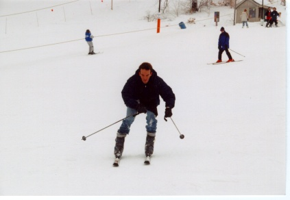
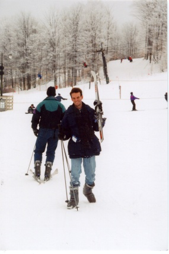

 Here are a couple of photos from a trip to Crystal Mountain, a ski resort in western Michigan, USA. A total of 25 people from UIUC went on the trip and a good time was had by all. This was my first experience skiing, so I went with no idea what to expect. This is one of my early runs. Going straight isn't so hard, but turning (and stopping) can be a bit challenging. I spent huge amounts of time flat on my back laughing insanely. I have never felt so totally uncoordinated before. Definitely a lesson in humility.
I am much more comfortable carrying the skis than when I am actually on them. I must say that after a ski lesson and a lot more practice I was having a great time. I ended up skiing for about 10 hours total and the experience was well worth the painful bruises. They took about two weeks to heal, but the memories will last a lot longer.
created by Richard Neish, 28 February 1998